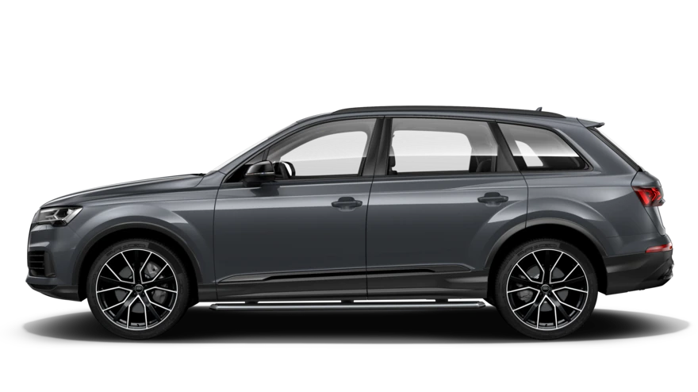

Новый Audi Q3 изменит ваше представление о кроссоверах. Технологичный, универсальный и вместительный. Представительный, но свободный от громоздкости «тяжелого люкса». Яркий, смелый и готовый к любым задачам.
Audi Q3 Sportback сочетает в себе эстетику и эмоциональность купе с энергичностью и функциональностью кроссовера. Широкие возможности информационно-развлекательной системы, богатый выбор стандартного и опционального оборудования обеспечивают исключительное удовольствие от вождения.
Вы требовательны к деталям и стремитесь к совершенству во всем? Тогда Audi Q5 — ваш идеальный выбор. Будучи воплощением перфекционизма, динамики и уверенности, он поражает элегантностью образа и технической безупречностью.Audi Q5 впечатляет моментальным, динамичным ускорением и превосходной управляемостью. В базовую комплектацию входит полный привод quattro для двигателя 45 TDI и полный привод quattro ultra для двигателя 45 TFSI, который оптимально распределяет крутящий момент между осями. Функция механической блокировки полного привода quattro обеспечивает прекрасную динамику и обеспечивает исключительное сцепление с поверхностью и курсовую устойчивость. Опциональная пневматическая подвеска с электронной регулировкой и бесступенчатой адаптивной системой демпфирования на всех четырёх колёсах автоматически регулирует дорожный просвет и жёсткость амортизаторов.
Стильное и эффектное сочетание динамики и мощи купе-кроссовера с комфортом автомобиля на каждый день. Плавная и ниспадающая, как у классических купе, линия крыши подчёркивает новый спортивный стиль, а полный привод quattro дарит неизменно яркие ощущения от вождения.
Новейшие технологии, применённые при разработке информационно-развлекательных и ассистирующих систем Audi Q7. Цвета и колесные диски Создайте свой Q7: в следующей галерее мы покажем три цвета лакокрасочного покрытия и три варианта колес, которые предлагаются для Audi Q7 в качестве опции. На версии в кузове цвета Orca Black установлены 21-дюймовые легкосплавные диски Audi Sport в дизайне 10 спиц Star. Audi Q7 цвета Barrique Brown оборудован 22-дюймовыми легкосплавными дисками Audi Sport в дизайне 5 трапециевидных рукавов. Последняя комбинация представляет собой автомобиль с лакокрасочным покрытием цвета Matador Red и 22-дюймовыми легкосплавными дисками Audi Sport в дизайне 5 рукавов Edge. * 21-22 дюймовые диски доступны к заказу через отдел запасных частей Audi Центр Минск.
